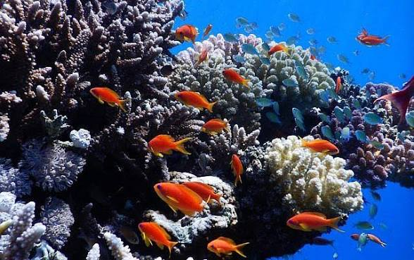

Les guerres ne s'arrêtent pas quand les fusils se taisent. Elles continuent de tuer — silencieusement, chimiquement, écologiquement — pendant des décennies. Ce que les médias comptent en pertes humaines et en milliards de dommages économiques n'est que la surface visible d'un désastre planétaire dont la planète ne peut pas se relever aussi vite que les bourses mondiales.
Les conflits en Ukraine, à Gaza et en Iran ne sont pas des accidents géopolitiques isolés. Ils sont les produits prévisibles d'un système fondé sur le contrôle des ressources, la compétition entre États au service d'intérêts économiques privés, et l'externalisation du coût humain et écologique vers les populations les plus vulnérables.


La guerre est aujourd'hui la plus grande source individuelle d'émissions carbone en Ukraine — dépassant toute l'industrie nationale combinée. À titre de comparaison, les 230 millions de tonnes de CO₂ émises depuis 2022 équivalent aux émissions annuelles complètes de l'Autriche. Ce chiffre ne tient pas compte des incendies de forêts provoqués par les combats : 808 km² brûlés en 2022, 772 km² en 2023 — soit l'équivalent de la ville de New York réduite en cendres deux fois.
La contamination des sols est catastrophique. Les obus d'artillerie, missiles et véhicules blindés libèrent du plomb, du mercure et de l'arsenic directement dans les terres agricoles. Plus de 200 000 acres de sol sont aujourd'hui contaminés — un pays dont l'agriculture nourrissait une bonne partie du monde.




Les frappes israélo-américaines sur l'Iran ont transformé ce bras de mer stratégique en zone de risque écologique extrême. Plus de 85 pétroliers bloqués au détroit d'Ormuz ont formé une traînée de pétrole de plus de 20 km lors des premières frappes. Greenpeace a averti qu'un seul déversement majeur dans ce couloir suffirait à déclencher la pire marée noire de l'histoire du Golfe, anéantissant des récifs coralliens déjà fragilisés par des décennies d'exploitation intensive.
À Gaza, le PNUE a documenté une contamination sans précédent des sols, de l'eau et de l'air. Les 39 millions de tonnes de débris d'engins explosifs — soit plus de 107 kilogrammes par mètre carré — contiennent des métaux lourds et des contaminants chimiques qui s'infiltrent dans les nappes phréatiques et la Méditerranée orientale.
Ces guerres ne sont pas des accidents. Elles sont le produit logique d'un système économique dont la survie dépend du contrôle des ressources naturelles — pétrole, gaz, terres arables, eau, minéraux. Derrière chaque conflit contemporain se trouvent des intérêts économiques privés qui profitent de la déstabilisation, de la reconstruction et du contrôle des flux énergétiques mondiaux.
Un système de gouvernance fondé sur le bien-être universel — comme l'Universalité — n'a structurellement aucun intérêt à déclencher des guerres pour des ressources. La coopération remplace la compétition. La durabilité écologique devient une contrainte non négociable.
La guerre est le capitalisme à son état le plus pur : la maximisation du profit privé au prix du sacrifice collectif — humain, social, et maintenant planétaire.
Chaque obus tiré est une décision économique. Chaque infrastructure énergétique frappée est un actif à reconquérir. Chaque réfugié est une externalité non comptabilisée. Et chaque espèce qui disparaît dans un golfe mazouté n'a pas de tribunal pour réclamer justice.
🌍 L'Universalité ne se construit pas avec des missiles. Elle se construit avec la décision collective que la vie — humaine et non-humaine — vaut plus que le contrôle des ressources.